/math-2fccdd06e4c2b79e4f65f2f532fdf9ec.png "n_{1}\!") 、イベントまたは成功の数を
、イベントまたは成功の数を/math-fdad14c036fde9f986da06150b87a44c.png "x_{1}\!") とすると、サンプルの比率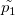は以下のように計算されます。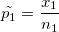
とすると、サンプルの比率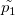は以下のように計算されます。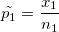
サンプル1の大きさを、イベントまたは成功の数をとすると、サンプルの比率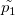は以下のように計算されます。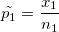
同様に、異なるサンプルでは、サンプルサイズは/math-524b3b5be113e2ddfb80c81946f7acd9.png "n_{2}\!") で、イベントの数を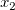とすると、サンプルの比率は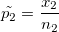
で、イベントの数を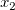とすると、サンプルの比率は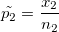
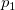及びは、サンプル1と2の真の母比率とし、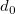は母比率と仮説の差とします。
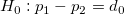 両側検定
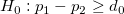 片側検定
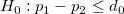 片側検定
仮説：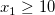 および 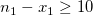、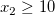 および 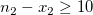により、正規近似検定を実行できます。
検定を行うために、/math-814b9f64b478b6caf94e723a0e6814c5.png "z\!") と
と /math-c619dfb3f0ada810733c791d3e461ade.png "p_{value}\!") の値を計算します。
の値を計算します。
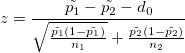 .
/math-2a3499732983c7813c587075c92c0990.png "d_{0}") が0になるような特殊な場合、Originでは、ダイアログで「検定にプールされたP値を使用」をチェックすることで、pを込みにした推定を使用できます。
が0になるような特殊な場合、Originでは、ダイアログで「検定にプールされたP値を使用」をチェックすることで、pを込みにした推定を使用できます。
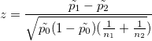 、ここで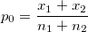
各仮説で、p値は以下のように与えられます。
、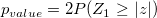、 両側検定
、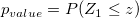、 上側検定
、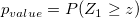、 下側検定
与えられた信頼度 /math-378df00d12056b404d7d02aef9d8650b.png "1-\alpha") について、サンプルの比率における信頼区間は以下のようにして与えられます。
について、サンプルの比率における信頼区間は以下のようにして与えられます。
| 帰無仮説 | 信頼区間 |
|---|---|
![\left[(\tilde{p_{1}}-\tilde{p_{2}})- Z_{\frac{\alpha}{2}}\sqrt{\frac{\tilde{p_{1}}(1-\tilde{p_{1}})}{n_{1}}+ \frac{\tilde{p_{2}}(1-\tilde{p_{2}})}{n_{2}}}, (\tilde{p_{1}}-\tilde{p_{2}})+ Z_{\frac{\alpha}{2}}\sqrt{\frac{\tilde{p_{1}}(1-\tilde{p_{1}})}{n_{1}}+ \frac{\tilde{p_{2}}(1-\tilde{p_{2}})}{n_{2}}}\right]](../images/Algorithm_(Two_sample_proportion_test)/math-ea62046992830b5407422a0bc50eb5e4.png "\left[(\tilde{p_{1}}-\tilde{p_{2}})- Z_{\frac{\alpha}{2}}\sqrt{\frac{\tilde{p_{1}}(1-\tilde{p_{1}})}{n_{1}}+ \frac{\tilde{p_{2}}(1-\tilde{p_{2}})}{n_{2}}}, (\tilde{p_{1}}-\tilde{p_{2}})+ Z_{\frac{\alpha}{2}}\sqrt{\frac{\tilde{p_{1}}(1-\tilde{p_{1}})}{n_{1}}+ \frac{\tilde{p_{2}}(1-\tilde{p_{2}})}{n_{2}}}\right]")
| |
| 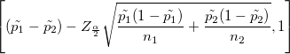 | |
| 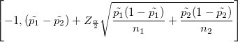 |
フィッシャーの正確確率検定は、が0であるときにすべてのサンプルサイズのために使用されます。 X= xのとき、超幾何分布の確率p（x）を表してみましょう。
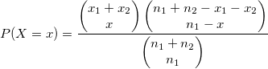
Mを超幾何分布モードで表します。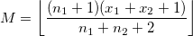
各仮説で、p値は以下のように与えられます。
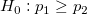, 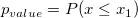
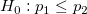, 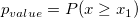
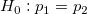のとき
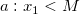: 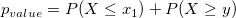
ここでyは、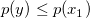のような最小の整数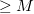です。
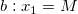
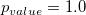
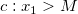
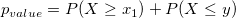
ここでyは、のような最大の整数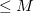です。